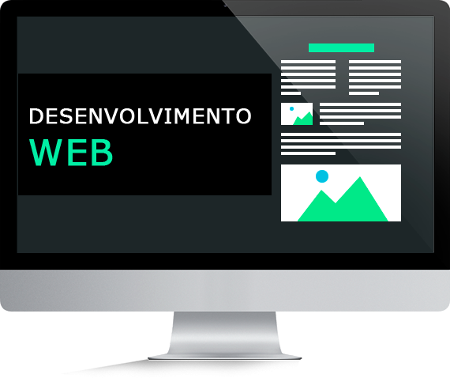

Um jovem de 21 anos com um alto desempenho na parte do aprendizado, desde que comecei a faculdade sem dúvidas a parte de desenvolvimento WEB me chamou bastante atenção, o fato de poder criar algo novo e do zero me instiga bastante, sem duvidas acertei e percebi que esses desafios diários na parte da tecnologia são o que preciso!
Conheci a area da tecnologia mais precisamente no inicio de 2020 e a partir dali eu tinha um ponto de partida, e então que iria "programar" as coisas para me tornar programador.
O fato de eu poder criar coisas provenientes de meus códigos é tao gratificante para mim, o trabalho é demoroso, mas o sentimento de dever cumprido nao tem preço, criar sistemas e pensar na complexidade do problema é algo extremamente eficaz para a auto evolução!
Atuo auxiliando no desenvolvimento de softwares, com análise e testes de sistemas, levantamento de requisitos e regras de negócio, mapeamento de processos e modelagem de dados, atuo com padrões de qualidade das rotinas e processos, impacto das alterações, garantia da integridade dos sistemas, realizo o planejamento de projetos e operações e versões, documentação das rotinas e processos, manuais, rotinas operacionais e outros, com acompanhamento e validação.
Elaboração e conferência de DI/LI/DSI, importação, análise documental, conhecimento como administrador nos sistemas, DD broker, i-broker, Onesource, registro de licença de importação e declaração de importação, desembaraços marítimos.
Conferência de malote, entrega/retirada de documentos, digitalização, check list de processos para faturamento.
C# é uma linguagem de programação, multiparadigma, de tipagem forte, desenvolvida pela Microsoft como parte da plataforma.NET. A sua sintaxe orientada a objetos facilitou o meu entendimento sobre a POO, e pretendo continuar estudando para assim poder alcançar a minha especialização/certificação. Leia mais »
Assim como todo cidadão que preza pela sua qualidade de vida, estou estudando bastante para conquistar uma oportunidade no exterior, estudo inglês com uma professora(Juliana Shell Schubert)) californiana há mais de um ano, além de ter como matéria na faculdade o inglês, Pretendo ainda dominar o francês e espanhol.Leia mais »
Desde o dia em que adquiri o hábito da leitura, em especial com o livro "O diário de Anne Frank", senti uma necessidade de expor em material físico todo meu pensamento e ideologia, forma de pensar e perspectiva sobre o mundo. Leia mais »